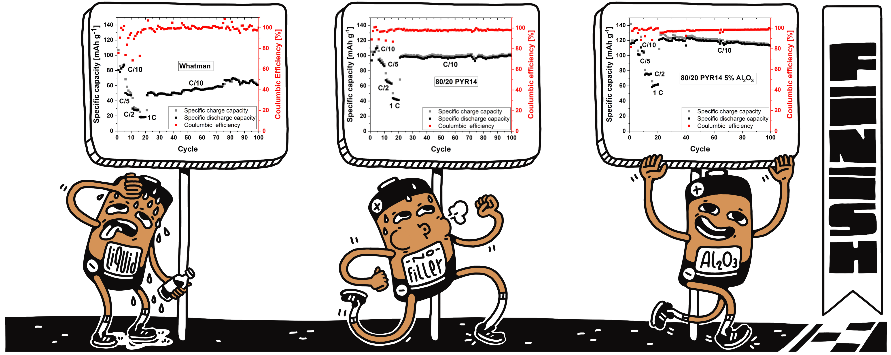
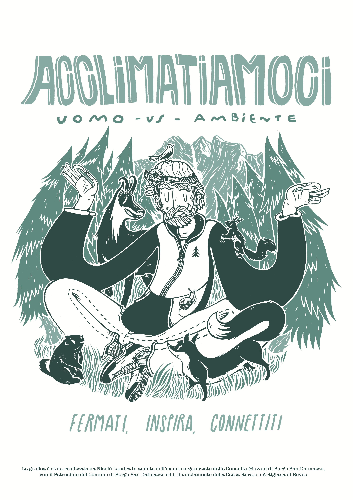

Research
Wearable systems for understanding human movement.
My research focuses on low-power wearable sensing, IMU and sEMG data, synchronization, and tools for joint angle estimation and rehabilitation monitoring.
Explore scientific workScientific research · Illustration
I work across wearable sensing, biomedical engineering, and visual storytelling, translating complex ideas into measured signals, prototypes, and illustrated worlds.



Research
My research focuses on low-power wearable sensing, IMU and sEMG data, synchronization, and tools for joint angle estimation and rehabilitation monitoring.
Explore scientific workIllustration
My illustration work spans science, environmental themes, travel, music, sports, and conceptual narratives, with a strong graphic and editorial sensibility.
Browse the portfolioWhere they meet
Whether the material is a biosignal, a prototype, a body in motion, or a visual metaphor, the goal is the same: observe carefully, extract structure, and communicate it clearly.